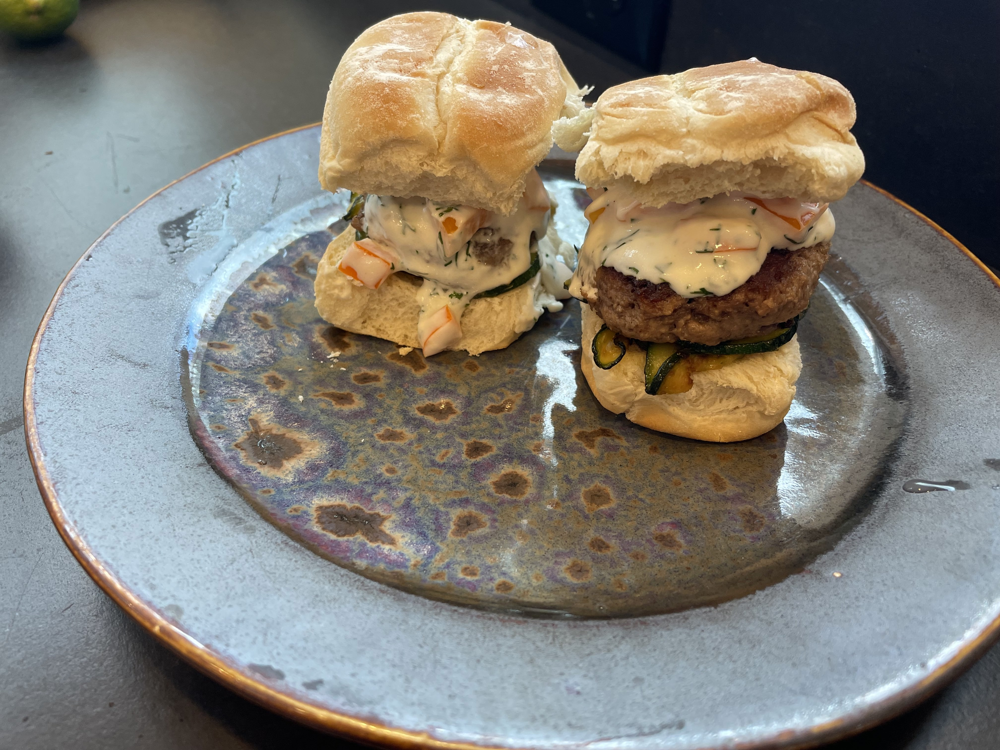

BET IT ALL ON BLACK GARLIC BURGER

photo taken by danette chavez.
Ingredients, curtesy of wikihow.
- 1 bulb of black garlic, peeled
- ½ cup (120 mL) of mayonnaise
- 1 lb (450 g) of ground beef (if frozen, be sure to defrost first)
- 1 ball of fresh mozzarella cheese, sliced
- 4 hamburger buns
- 1 bag of baby spinach
- Salt and pepper
- Sriracha
Make the black garlic–Sriracha mayo.
Puree the black garlic using a food processor.
Mix in the mayonnaise plus 1 tsp (6 g) of salt. You can add more salt if needed.
Add in the Sriracha.
The black garlic has a very earthy taste,
so the mayo will have a strong umami flavour.
Squirting in some Sriracha will balance it out with some heat.
BEAT YOUR MEAT
Form 4 beef patties of equal size. Season both sides with salt and pepper.
COOK YOUR MEAT
Throw that ish on the grill, in the pan, on a cookie sheet and throw it in your car during the summer.
I don't care how ya do it, but cook it till it's at 160 degrees internally, and cooked thorough.
WHO CUT THE CHEESE
Add slices of the mozzarella to the patties. cover with foil loosely if cooking on the stove.
i'm sure you've cooked burgers on the grill before.
Build the burgers.
Follow this order: bottom bun, a handful of baby spinach,
patty with melted cheese, a smear of black garlic–Sriracha mayo, and top bun.